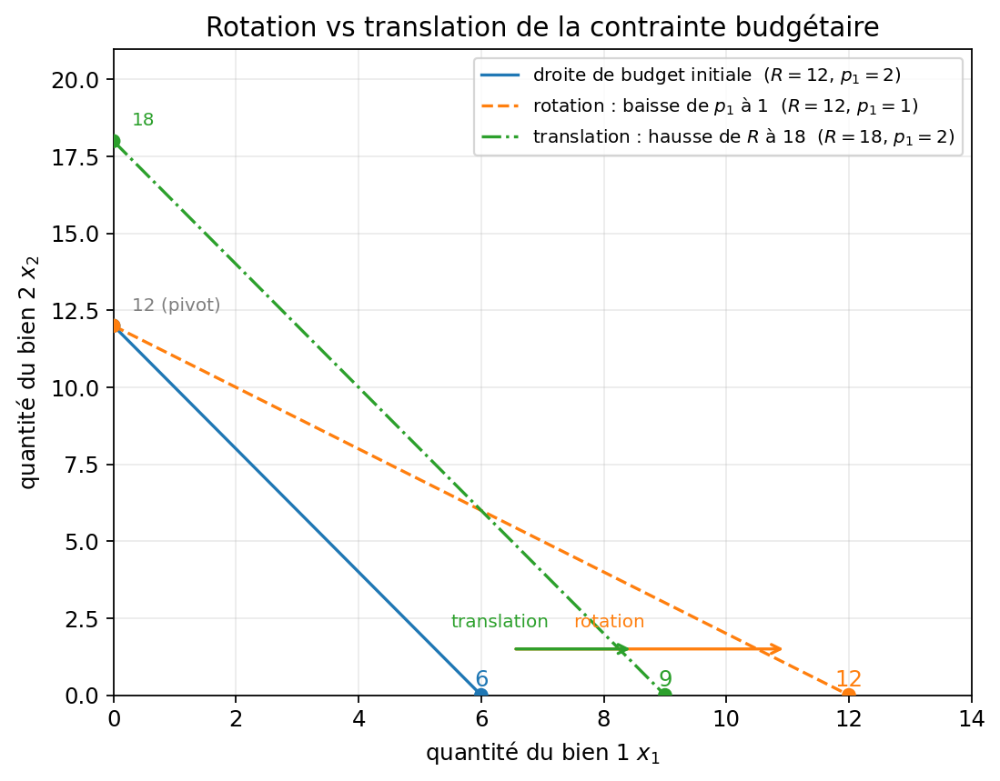
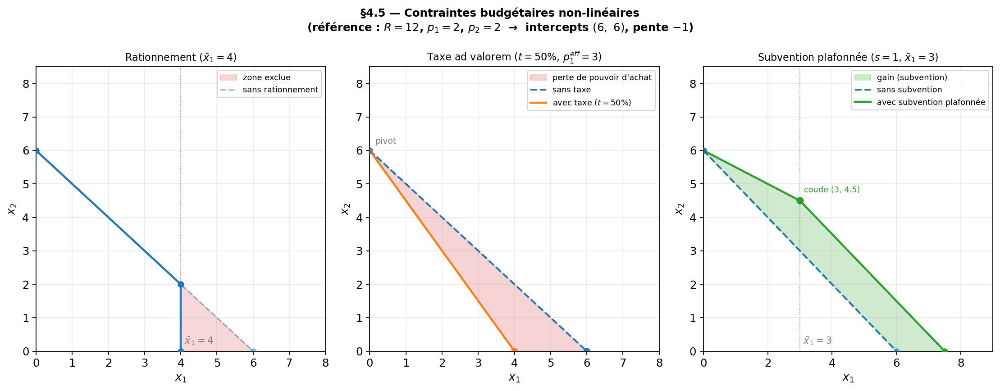

Chapitre 4 — Contrainte budgétaire
Question du chapitre
Quels paniers le consommateur peut-il effectivement acheter ?
Idée à comprendre d’abord
La contrainte budgétaire ne dit pas ce que le consommateur veut. Elle dit ce qu’il peut faire. Toute la suite du cours repose sur cette rencontre entre préférences et possibilités d’achat.
4.1. Équation de budget
Si le revenu est \(R\) et les prix sont \(p_1\) et \(p_2\), alors :
\[ p_1x_1+p_2x_2 \leq R \]
La frontière des paniers juste accessibles est :
\[ p_1x_1+p_2x_2=R \]
4.2. Coordonnées à l’origine et pente
Si tout le revenu est consacré au bien 1 :
\[ x_1=\frac{R}{p_1} \]
Si tout le revenu est consacré au bien 2 :
\[ x_2=\frac{R}{p_2} \]
En isolant \(x_2\), on obtient :
\[ x_2=\frac{R}{p_2}-\frac{p_1}{p_2}x_1 \]
La pente vaut donc :
\[ -\frac{p_1}{p_2} \]
Lecture analytique : la pente de la droite de budget est \(-p_1/p_2\) ; elle mesure la quantité de bien 2 à laquelle il faut renoncer pour obtenir une unité supplémentaire de bien 1.
Lecture économique : \(p_1/p_2\) est le prix relatif du bien 1 en unités de bien 2. C’est une donnée de marché.
Numéraire. Seuls les prix relatifs comptent. Multiplier tous les prix et le revenu par un même \(\lambda > 0\) ne change pas l’ensemble budgétaire : \(\lambda p_1 x_1 + \lambda p_2 x_2 \leq \lambda R\) est identique à la contrainte initiale. On peut donc toujours normaliser un prix à 1 — c’est le numéraire.
4.4. Ce qu’il faut voir immédiatement sur un graphique
Quand tu regardes une droite de budget, repère dans cet ordre :
- les deux coordonnées à l’origine ;
- la pente ;
- la cause d’un déplacement : revenu ou prix ;
- le sens du mouvement : translation ou rotation.
Erreur classique
Confondre une translation de la droite de budget avec une rotation. Le revenu modifie les deux coordonnées à l’origine à la fois ; la variation d’un seul prix fait pivoter la droite.
Graphique — 5 scénarios de variation de la contrainte budgétaire
Référence commune. \(R=12\), \(p_1=2\), \(p_2=3\) → abscisse à l’origine \((6)\), ordonnée à l’origine \((4)\), pente \(-2/3\).
| Scénario | Pente | Abscisse à l’origine \(R/p_1\) | Ordonnée à l’origine \(R/p_2\) |
|---|---|---|---|
| 1 — \(p_1\downarrow\), \(p_2\) constante | s’aplatit (\(-1/3\)) | ↑ (12) | inchangée (4) |
| 2 — \(p_1\downarrow\), \(p_2\uparrow\) | s’aplatit encore (\(-1/6\)) | ↑ (12) | ↓ (2) |
| 3 — \(p_1\uparrow\), \(p_2\downarrow\) | se redresse (\(-8/3\)) | ↓ (3) | ↑ (8) |
| 4 — \(p_1\uparrow\), \(p_2\uparrow\) | ambiguë (\(-3/4\)) | ↓ (4) | ↓ (3) |
| 5 — \(R\uparrow\), prix constants | inchangée (\(-2/3\)) | ↑ (9) | ↑ (6) |
Zones colorées. Vert = gain de pouvoir d’achat (la nouvelle droite est au-dessus : on peut se permettre plus de bien 2 pour tout panier donné) ; rouge = perte. L’aire colorée est une indication qualitative et n’a pas d’autre interprétation économique comme elle peut en avoir dans d’autres graphiques (surplus du consommateur sur un graphique offre-demande, perte sèche d’une taxe, etc.).
Scénarios 2 et 3. Les deux droites se croisent à l’intérieur du plan : l’effet net dépend du panier consommé — gain sur un bien, perte sur l’autre.
Graphique - Contraintes budgétaires non-standard
Dans le cas standard, la contrainte est une droite. Trois dispositifs courants brisent cette linéarité.
Rationnement
Une quantité maximale \(\bar x_1\) est imposée sur le bien 1. La droite de budget est tronquée : elle suit la pente habituelle \(-p_1/p_2\) jusqu’à \(x_1 = \bar x_1\), puis devient un segment vertical (le consommateur ne peut pas acheter plus, quelle que soit sa capacité financière). L’ensemble budgétaire est strictement réduit par rapport au cas standard.
Taxe ad valorem
Le prix effectif du bien 1 devient \(p_1(1+t)\). La droite pivote vers l’intérieur autour du point d’ancrage \(R/p_2\) (l’ordonnée à l’origine, inchangée), exactement comme une hausse de \(p_1\). La recette fiscale est lisible sur le graphique comme l’écart horizontal entre la droite sans taxe et la droite avec taxe, évalué à la quantité choisie.
Subvention plafonnée
Le prix effectif est \(p_1 - s\) pour les \(\bar x_1\) premières unités, puis \(p_1\) au-delà. La droite est coudée en \(x_1 = \bar x_1\) : plus plate (pente \(-(p_1-s)/p_2\)) jusqu’au seuil, puis elle reprend sa pente initiale \(-p_1/p_2\) à partir du coude. C’est un exemple classique de contrainte budgétaire non-convexe : l’ensemble des paniers accessibles n’est pas convexe.

4.3. Comment la droite de budget se déplace
1. Hausse du revenu
Si \(R\) augmente et que les prix ne changent pas, la droite se translate parallèlement vers le haut.
2. Hausse de \(p_1\)
Si \(p_1\) augmente :
3. Hausse de \(p_2\)
Le raisonnement est symétrique : cette fois, c’est l’ordonnée à l’origine qui diminue et on pivote autour de l’abscisse à l’origine.